En la página de ejercicios, hacer clic en el enlace al archivo comprimido que contiene la página web sin formatear y, en su caso, las imágenes necesarias.
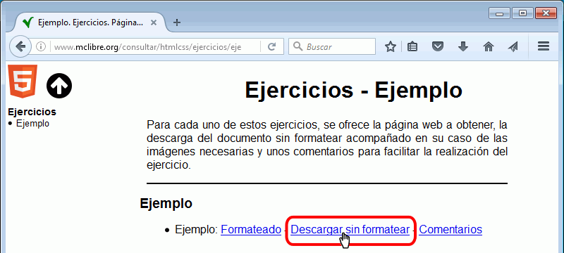
Se abrirá una ventana de diálogo en la que hay que elegir el botón radio "Guardar archivo" y hacer clic en el botón Aceptar:
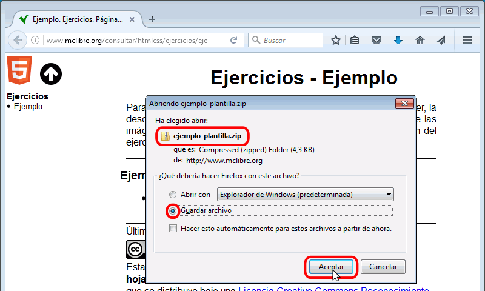
Una vez descargado el archivo, abrir la carpeta de descargas haciendo clic en el botón de Descargas de la barra de dirección:
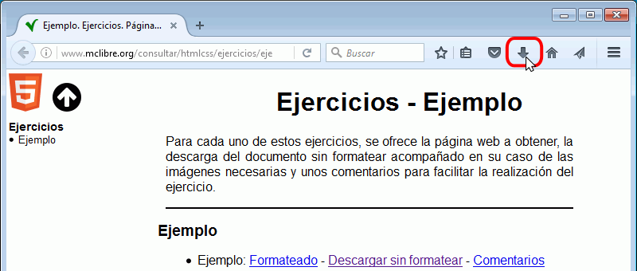
Hacer clic en el icono de carpeta correspondiente al fichero descargado:
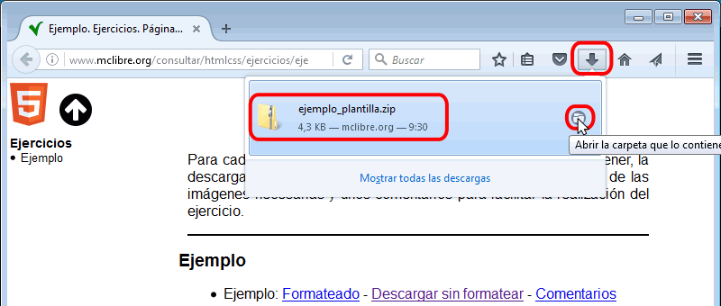
Se abrirá el explorador de Windows mostrando la carpeta de descargas:
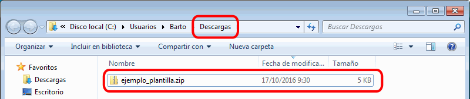
Mover el archivo comprimido a la carpeta de ejercicios y descomprimirlo en ella. Se creará una carpeta con el nombre del ejercicio. Borrar el archivo comprimido.
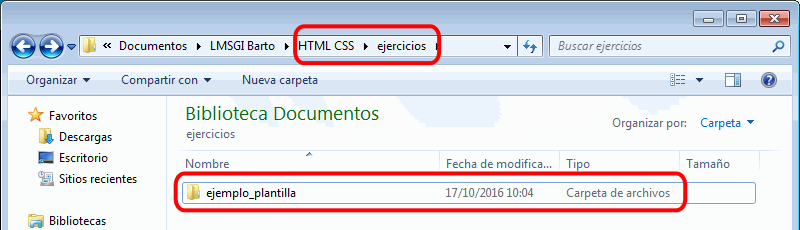
Cambiar el nombre de la carpeta, quitándole la parte final "_plantilla". Se aconseja hacerlo para evitar problemas si hubiera que volver a descomprimir el archivo comprimido.
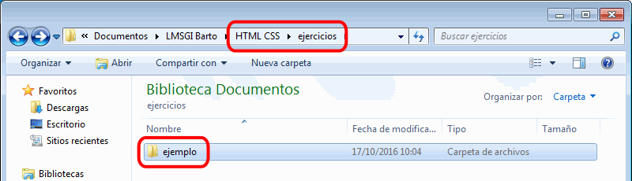
En la carpeta se encontrarán la(s) página(s) web sin formatear y, en su caso, las imágenes y fuentes necesarias.
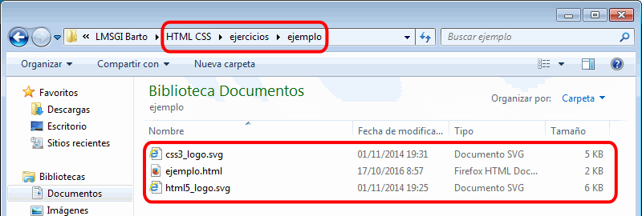
Abrir las páginas en Brackets y en los navegadores
Abrir en Brackets la página web del ejercicio sin formatear
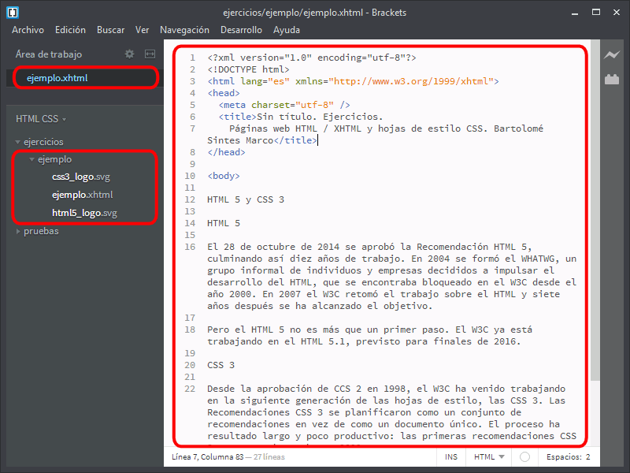
Abrir la vista previa en vivo del documento (Google Chrome):
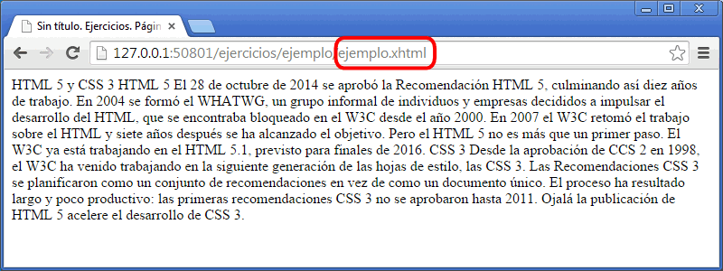
Abrir en Firefox varias pestañas, con al menos las siguientes páginas:
apuntes de clase
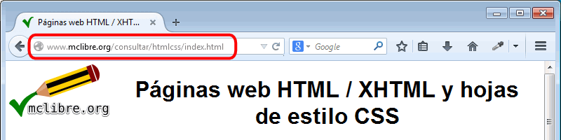
ejercicio formateado (en los apuntes)
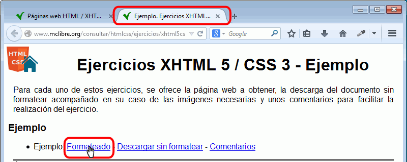
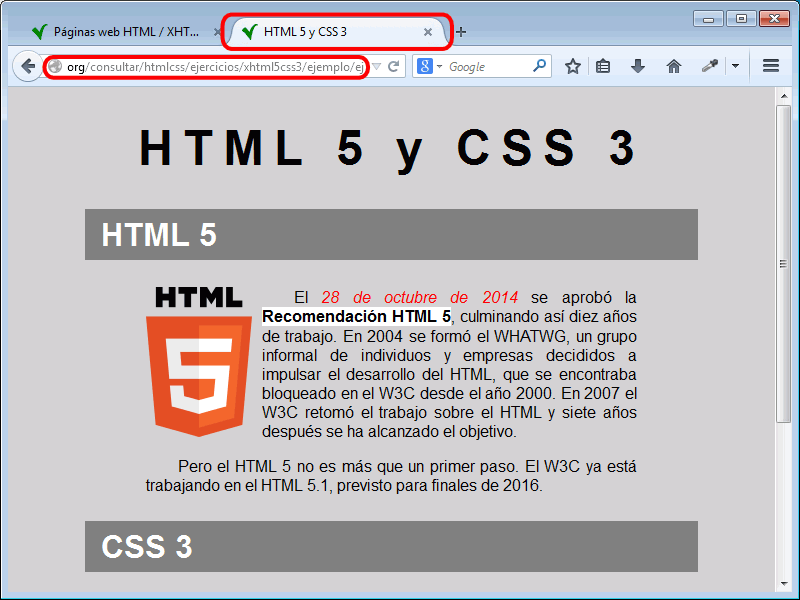
La disposición de las ventanas es una elección personal que depende sobre todo de la resolución y tamaño de la pantalla. Una posible disposición de estas tres ventanas (en la que podríamos ir alternando entre ventanas mediante el atajo de teclado Alt+Tab) podría ser la siguiente:
ventana de Brackets ocupando el 50% inferior de la pantalla y ventana de Google Chrome ocupando el 50% superior de la pantalla, para ir viendo el estado de nuestra página a medida que la editamos:
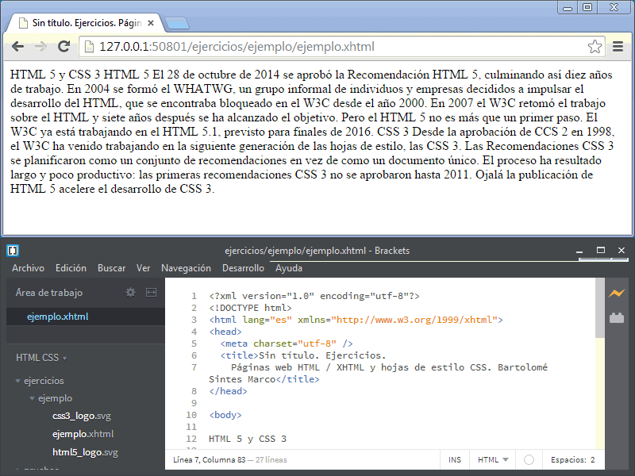
ventana de Brackets ocupando el 50% inferior de la pantalla y ventana de Firefox ocupando el 50% superior de la pantalla, para ver el resultado final que debemos conseguir e ir editando al mismo tiempo.
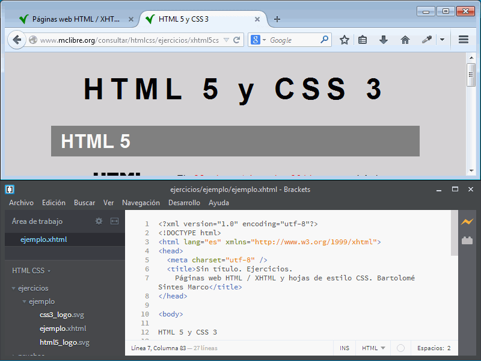
Crear y enlazar la hoja de estilo
En Brackets, hacer clic derecho en la carpeta del ejercicio y elegir la opción "Nuevo archivo":
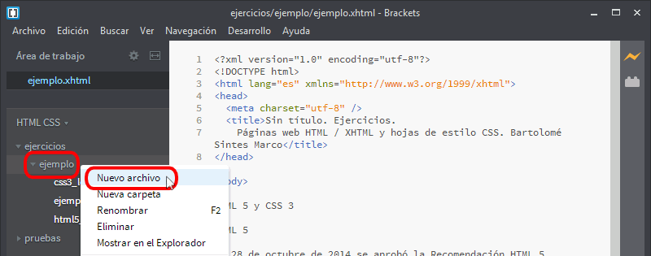
Se creará un archivo en la carpeta y se mostrará su nombre (Sin título) en el árbol de archivos:
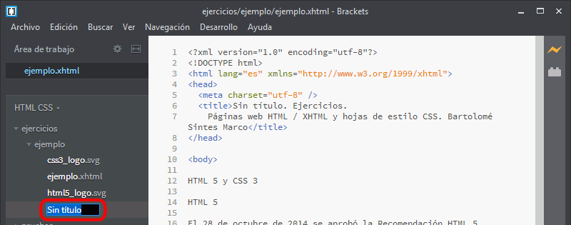
Escribir el nombre de la hoja (con la extensión .css) y pulsar Intro. El nombre de la hoja de estilo puede ser el mismo nombre de la página web o un nombre genérico (por ejemplo, estilo.css).
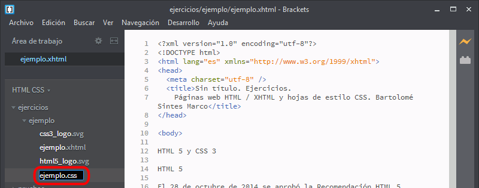
La hoja de estilo recién creada se mostrará en el área de trabajo.
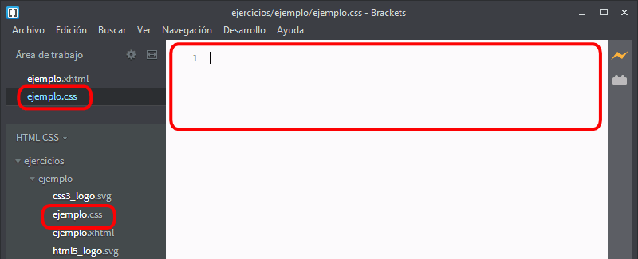
En la página web, añadir el enlace a la hoja de estilo
<link rel="stylesheet" type="text/css" href="ejemplo.css" title ="Color" />
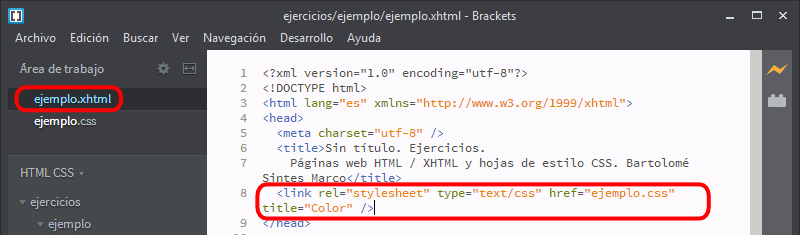
Para comprobar que la hoja está correctamente enlazada, escribir alguna regla en la hoja de estilo (por ejemplo, el color de fondo de la página) y comprobar con la vista previa en vivo que se aplica el estilo.
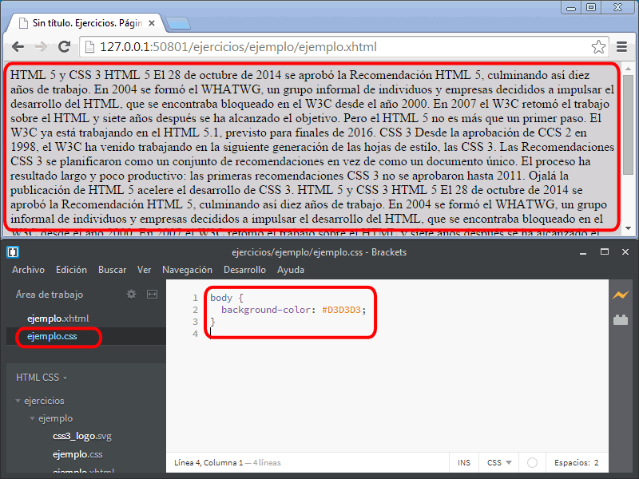
Asignar las etiquetas HTML en la página web
El objetivo de los ejercicios es obtener una página web lo más parecida posible al original. Eso incluye tanto el aspecto visual como las etiquetas utilizadas.
Algunas etiquetas pueden deducirse del aspecto de la página cuando se desactiva la hoja de estilo. Esas etiquetas deben emplearse.
Otras etiquetas pueden deducirse del aspecto de la página cuando se aplica la hoja de estilo. Esas etiquetas deben emplearse.
En algunos casos pueden utilizarse diferentes etiquetas y no se puede deducir cuáles a partir de la página (con o sin hoja de estilo). En esos casos, se puede utilizar cualquiera de ellas, aunque a veces unas se utilizan más que otras.
Para desactivar la hoja de estilo en Firefox, hay que elegir el menú Ver > Estilo de página > Sin estilo
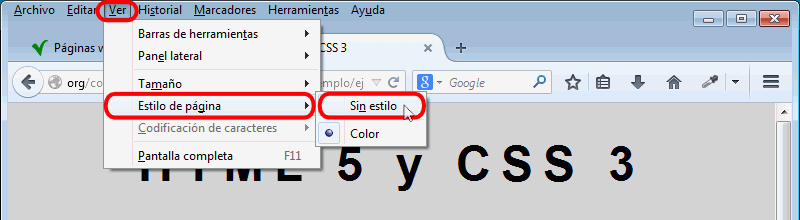
Al quitar la hoja de estilo, el navegador aplica la hoja de estilo por omisión, lo que permite reconocer la mayoría de etiquetas (en los casos en que hay ambigüedad, se puede utilizar cualquiera de las que dan el mismo resultado).
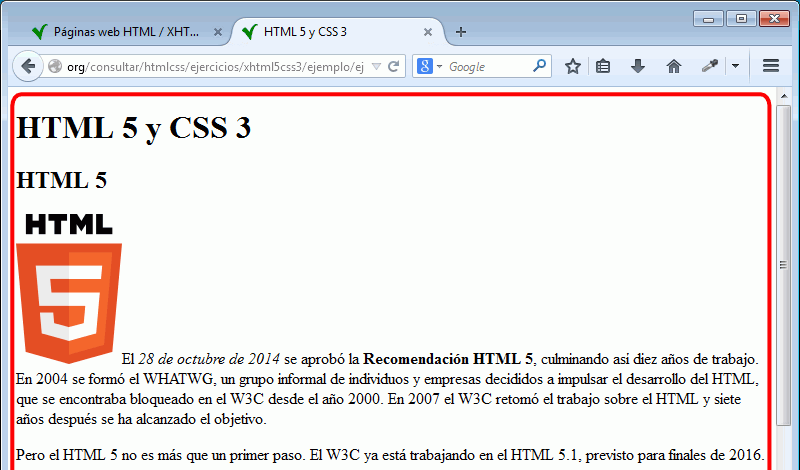
Una vez averiguadas las etiquetas, es necesario activar de nuevo la hoja de estilo Ver > Estilo de página > Estilo de página básico, si el enlace a la hoja de estilo no tiene atributo title, o Ver > Estilo de página > XXXXX si el atributo title del enlace a la hoja de estilo tiene el valor XXXXX.
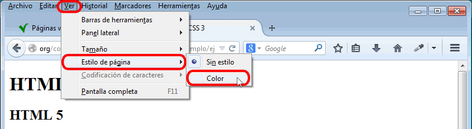
Para añadir las etiquetas en Brackets, se recomienda instalar la extensión Brackets Surround.
Corregir errores en las páginas web y en las hojas de estilo
Las páginas web y las hojas de estilo no deben contener errores.
Para facilitar la identificación de errores, se recomienda instalar las extensiones W3CValidation y CSSLint de Brackets. Pero no basta con tener instaladas las extensiones; es necesario fijarse a menudo en el icono de notificación de errores de estas extensiones mientras se están editando la página web o la hoja de estilo.
La extensión W3CValidation muestra los errores en las páginas web, que deben corregirse todos
La extensión CSSLint muestra los errores en las hojas de estilo, que deben corregirse todos, pero también consejos, que no tienen por qué corregirse, aunque sí tenerse en cuenta (véase la lección sobre CSS Lint).